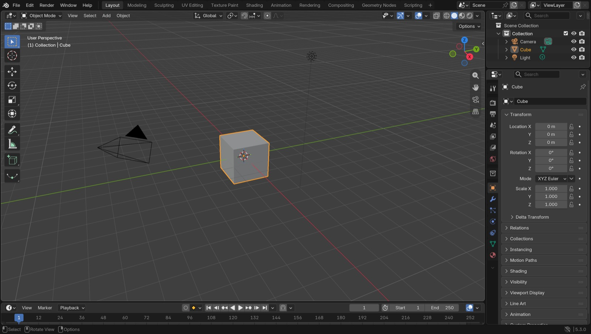
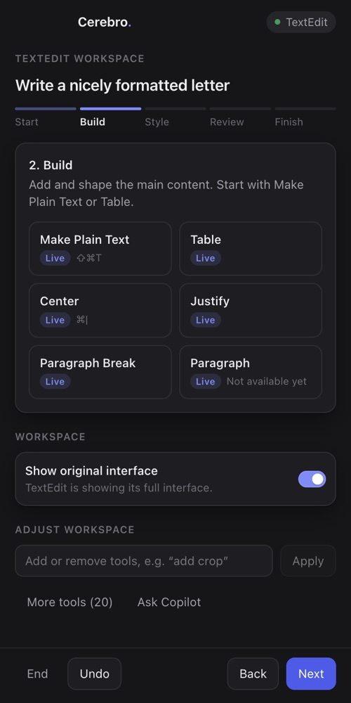

Complexity, understood.
Cerebro uses AI to read the software you already use, clear away the clutter, and rebuild the interface around what you’re actually trying to do. Its buttons operate the real app.
- Pick an example or type a goal. Cerebro reads the app, then keeps only what you need.
Illustrative preview in your browser. The app builds your workspace live from the controls it finds in the app you have open.
Same app. Less in the way.

 Original
With Cerebro
Original
With Cerebro
Cerebro hid these panels through Blender’s own API, and brought every one back with a single click.
Activate Cerebro.
Start with the Mac app. Add the Chrome extension for websites and the Blender plugin for 3D work.
Cerebro for Mac
The floating Cerebro panel. Works with Numbers, Pages, Keynote, TextEdit and most other Mac apps.
- Unzip and move Cerebro to Applications.
- Open it. If macOS says it can’t verify Cerebro, click Done, then open System Settings › Privacy & Security and click Open Anyway.
- Allow Accessibility when Cerebro asks.
Chrome extension
Simplifies web apps like Excalidraw and Photopea right on the page.
- Unzip the file.
- Open
chrome://extensions, turn on Developer mode. - Click Load unpacked and pick the folder.
Blender plugin
Gives Cerebro direct, verified control of Blender’s own operations.
- In Blender, open Edit › Preferences.
- Get Extensions › Install from Disk.
- Choose the downloaded .zip.
Cerebro is an early build and isn’t notarized by Apple yet, which is why macOS asks you to approve it once in Privacy & Security. For smarter, AI-designed workspaces, open Cerebro › Settings and paste an Anthropic API key. Without one, Cerebro plans offline.
Say what you want. Get the tools for it.
Cerebro doesn’t memorise where each app keeps its buttons. It reads the controls that are actually there, every time, so it works in apps it has never seen.
- 01
Describe your goal
In your own words, like make a monthly budget or crop a photo.
- 02
Cerebro reads the app
Every menu command, toolbar button and panel it exposes: 465 in Numbers, 1,207 in Blender.
- 03
You get a small workspace
Only the tools your goal needs, in order: start, build, style, review, finish. Ask for more or remove what you don’t want.
- 04
The buttons are real
Pressing a tool operates the actual app, and Cerebro checks afterwards that it happened. When something new appears, like a dialog’s Create button, it becomes your next step.

Every tool says how far to trust it.
Cerebro never pretends. Each button carries a badge that tells you exactly what will happen when you press it.
Official app API
Runs through the app’s own plugin system and checks the result. Blender tools work this way.
Pressed for you
Operated through macOS Accessibility or the web page itself, then confirmed by re-reading the app.
Shown, not pressed
Typing and sliders stay yours. Cerebro points to the control and you use it.
One brain. Many apps.
The same engine plans every workspace. Small adapters connect it to each kind of software, with no app-specific workflows written by hand.
| App | Controls found | What Cerebro did in the real app |
|---|---|---|
| Blender 5.3Plugin | 1,207 | Added shapes and modifiers; simplified and restored the interface |
| NumbersmacOS Accessibility | 465 | Created a new spreadsheet from the template chooser |
| TextEditmacOS Accessibility | 168 | New document, rich and plain text, ruler; a full workspace from a typed goal |
| ExcalidrawChrome extension | 152 | Picked the rectangle and arrow tools; faded the controls you don’t need |
| PhotopeaChrome extension | 83 | Created a new image, then switched on the crop tool |
Your work stays yours.
Cerebro changes how an app looks, never what it contains, unless you press a tool that does.
- Asks before anything riskyDelete, send, pay, publish and quit always need a second click.
- Never touches passwordsPassword fields are skipped entirely, and field contents are never read.
- Puts everything backShow the original interface any time. Quitting Cerebro or switching apps restores every app.
- Runs on your MacCerebro’s engine only listens on your own computer. Web pages can’t reach it.
- The AI chooses, never actsIt picks from controls Cerebro found. It can’t invent actions or run code.
- Your key stays privateYour Anthropic key is stored encrypted in your Mac’s keychain and only sent to Anthropic.
Where Cerebro is today.
An early, working prototype. Here’s what’s solid and what’s next.
Working now
- Mac app for any Accessibility-ready app
- Chrome extension for web apps
- Blender plugin
- AI planning with your Anthropic key, or offline
- Simplify, undo and restore
Coming next
- Windows and Linux
- Plugins for DaVinci Resolve and Adobe apps
- Screen understanding for apps with hidden controls
- Remembered layouts and preferences
- A signed, notarized Mac app